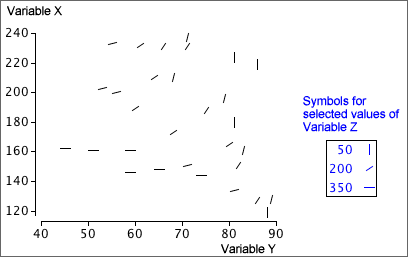

If you don't want to print now,
Different plotting symbols for a third variable
The simplest way to show the relationship between three numerical variables is based on a scatterplot of two of the variables, with the third variable being represented by differing symbols instead of identical 'crosses'. Possibilities are:
Although this kind of scatterplot is easy to draw, it is usually hard to interpret. The decision about which of the three variables to represent using the plotting symbol can make interpretation easier.

3-dimensional scatterplots
The most direct way to extend a standard scatterplot of two variables, X and Y, to include a third variable, Z, is to add a third dimension to become an axis for Z. Each individual would be represented by a cross in a 3-dimensional cube.
Although a computer screen is only 2-dimensional, it can display a projection of such a 3-dimensional scatterplot. Rotating such a display with the mouse gives a good feel for the shape of the underlying 3-dimensional scatter of points. This is a dynamic display that is only effective on a computer — the information in the display is conveyed by movement. On paper, we can only present information in two dimensions.
Three-dimensional scatterplots are an interesting (and occasionally useful) way to display data. They are however much overrated as an analysis technique and simpler displays are usually more effective for extracting information from multivariate data.
Scatterplots of all pairs of variables
The problem of displaying relationships becomes even more difficult when there are more than three variables. It is possible to gain some insight into their relationships with an array of scatterplots of all pairs of variables, called a scatterplot matrix.
Brushing
Although a static scatterplot matrix reveals some aspects of the relationships between the variables, more insight into the data is obtained by adding dynamic features.
On a computer display, the scatterplots can be dynamically linked, so that clicking on a cross on one scatterplot highlights that individual in all scatterplots. Brushing extends this to allow highlighting of multiple crosses on a scatterplot with a 'brush' tool.

Slicing a scatterplot using a third variable
Slicing is a dynamic technique that only displays a subset of the individuals, based on a restricted range of values for one particular variable. For example, we might display a scatterplot of Y against X, but only for individuals whose values of Z are between 20 and 30. The subset can be dynamically changed with a slider or other control to show whether the relationship between X and Y is different for individuals with low Z and high Z.
Trellis plot
Slicing is a dynamic method and must therefore be performed on a computer. Although less effective, an alternative is to show a series of static plots for different slices of the data. This is called a trellis plot.

Distinguishing groups in a scatterplot matrix
A scatterplot matrix can help to describe the relationships between 3 or more numerical variables. If each individual belongs to one of several known groups, different symbols or colours can be used to distinguish the groups.